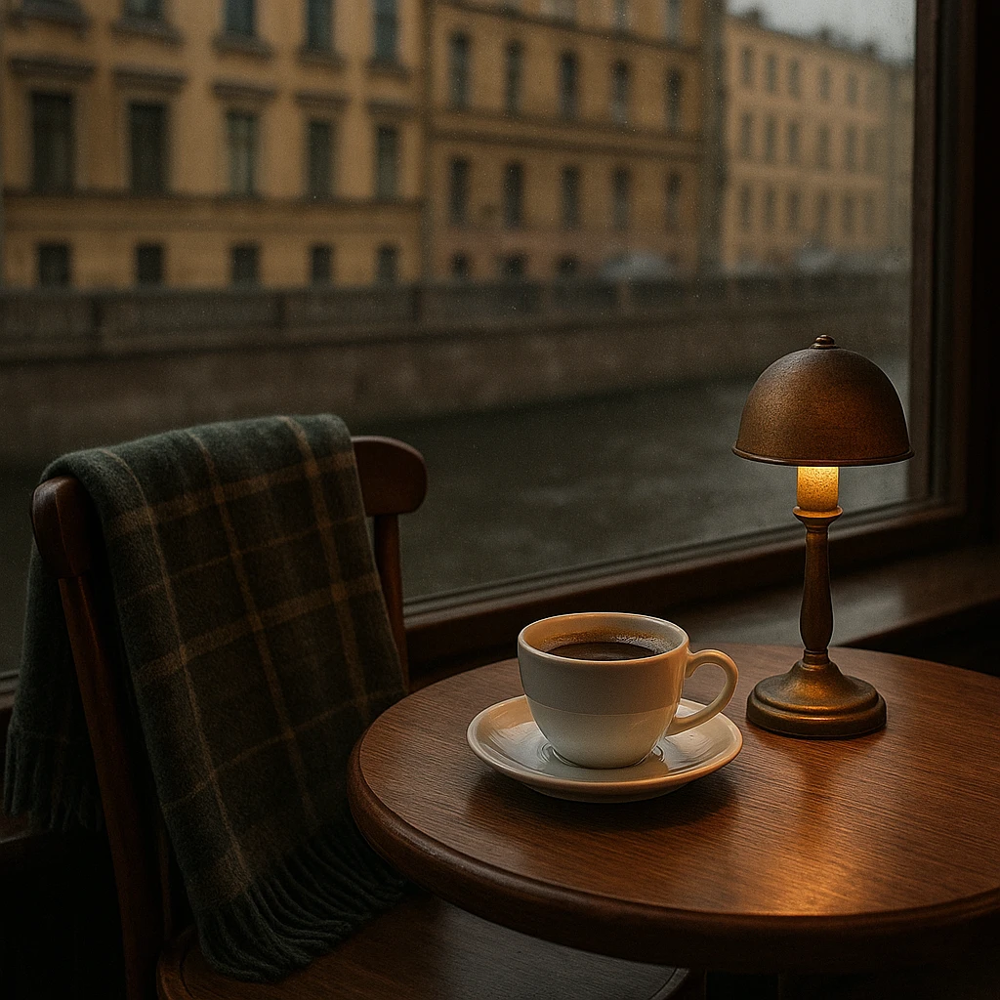

Кафе у окна, за которым канал в любое время суток
Кафе «Окно на воду» на канале Грибоедова в Санкт-Петербурге. Кофе, горячая еда и пышки. Пледы на стульях, а за стеклом вода и мост.
Набережная канала Грибоедова, 57. Ежедневно с 9:00 до 22:00.
День на канале. По набережной идут, по воде плывут.
Показано время на ваших часах.
Здесь не торопят
Мы устроили кафе в первом этаже старого дома. Окна большие, до самого пола, и воду видно почти из любого места зала.

- Столики у окна
- Их шесть, прямо у стекла, с видом на воду и мост. Остальные стоят вторым рядом: воду видно, но чуть дальше. Хотите именно у окна, бронируйте заранее.
- Пледы
- На стульях лежат шерстяные пледы, особенно пригодятся осенью и в сырую погоду.
- Книги и лампы
- На полке у стены книги, которые можно читать на месте. По вечерам на столиках зажигаем лампы.
- Веранда у воды
- С мая по сентябрь выставляем столики на набережную.
Кто сидит у окна
«Зашла переждать дождь, а просидела два часа. Плед, чай с малиновым вареньем и вода за окном. Теперь прихожу по воскресеньям».
Мария
«Бронировали столик у окна на годовщину. Подтвердили быстро, стол держали. Вечером на канале зажгли фонари, и все вышло красиво».
Антон
«Люблю, что можно прийти с книгой и никто не торопит. Пышки тёплые, не масляные».
Елена
«Работаю тут по утрам: розетка у окна, фильтр-кофе и тихо. Вид на воду помогает думать».
Павел
Питерское и вкусное
- Пышки
- Жарим их каждое утро. Подаём тёплыми, с сахарной пудрой, как в старых пышечных. Четыре штуки за 240.
- Кофе
- Берём зерно у небольшой обжарки и обновляем его каждые две недели. Варим эспрессо, фильтр и молочные напитки.
- Чай с вареньем
- Малиновое и брусничное варим сами. Чай приносим в чайнике, вместе с вареньем в розетке.
- Суп дня
- Каждый день новый. Что сегодня, подскажем на кассе или в Telegram.
Как нас найти
Санкт-Петербург, набережная канала Грибоедова, 57. Вход с набережной, рядом с мостом, над дверью вывеска с синим кругом.
- Часы работы
- Ежедневно с 9:00 до 22:00. Завтраки с 9:00 до 12:00.
- Как добраться
- Пять минут пешком от метро «Садовая». Рядом можно оставить велосипед.
- На карте
- Открыть в Яндекс Картах
- Телефон
- +7 000 000-00-00
- Telegram
- Написать в Telegram
Забронируйте столик у окна
Частые вопросы
Во сколько вы открываетесь?
Ежедневно с 9:00 до 22:00. Завтраки подаём с 9:00 до 12:00.
Можно ли забронировать столик у окна?
Да, оставьте заявку на сайте или позвоните. Таких столиков шесть, поэтому лучше заранее, особенно на вечер и выходные.
Нужна ли бронь и предоплата?
Приходите и без брони, посадим где свободно. В выходные вечером мест может не быть. Предоплата не нужна. Если планы изменились, позвоните или напишите хотя бы за час.
Что делать, если нас больше шести?
Позвоните или напишите в Telegram, составим столы вместе.
Можно ли прийти с ребёнком или с собакой?
С ребёнком можно, есть детские стульчики. С собаками можно на веранде, пока она работает, с мая по сентябрь.
Работает ли веранда зимой?
Нет, веранда у воды работает с мая по сентябрь. Зимой все столики внутри, у окон.
Есть ли wi-fi и розетки?
Wi-fi бесплатный. Розетки у столиков у окна.
Есть ли блюда без молока и без глютена?
Напитки можно приготовить на овсяном или миндальном молоке. Безглютеновых блюд сейчас нет. Подскажем на кассе, что подойдёт. Хотите знать состав заранее, позвоните или напишите в Telegram.
Можно ли платить картой?
Да, картой и наличными.
Сколько обычно выходит на человека?
Кофе с пышками выходит около 500 рублей, с горячим блюдом около 900.
Как к вам добраться?
Мы на набережной канала Грибоедова, рядом с мостом. Подробности в блоке «Как нас найти».